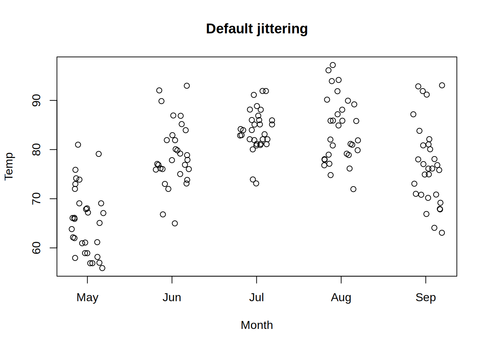

library(tinyplot)
aq = transform(
airquality,
Month = factor(Month, labels = month.abb[unique(Month)]),
Hot = Temp > median(Temp)
)Plot types
tinyplot is a lightweight extension of R’s base plotting system, designed to simplify and enhance data visualization. One of its key features is the type argument, which allows you to specify different types of plots easily. This tutorial will guide you through the various plot types available in tinyplot, demonstrating how to use the type argument to create a wide range of visualizations.
We will consider three categories of plot types:
- Base types
- tinyplot types
- Custom types
We will use the built-in airquality dataset for our examples:
Base types
The type argument in tinyplot supports all the standard plot types from base R’s plot function. These are specified using single-character strings.
"p"(Points): Produces a scatter plot of points. This is (usually) the default plot type."l"(Lines): Produces a line plot."b"(Points and Lines): Combines points and lines in same the plot."c"(Empty Points Joined by Lines): Plots empty points connected by lines."o"(Overplotted Points and Lines): Overlaps points and lines."s"and"S"(Stair Steps): Creates a step plot."h"(Histogram-like Vertical Lines): Plots vertical lines resembling a histogram."n"(Empty Plot): Creates an empty plot frame without data.
For example, we can use "b" to create a plot with combined points and lines.
tinyplot(Temp ~ Day | Month, data = aq, type = "b", main = "Points and lines")
tinyplot types
Beyond the base types, tinyplot introduces additional plot types for more advanced visualizations. Each of these additional types are available either as a convenience string (with default behaviour) or a companion type_*() function (with options for customized behaviour).
Shapes
| string | function | description | docs |
|---|---|---|---|
"area" |
type_area() |
Plots the area under the curve from y = 0 to y = f(x). |
link |
"errorbar" |
type_errorbar() |
Adds error bars to points; requires ymin and ymax. |
link |
"l" / "b" / etc. |
type_lines() |
Draws lines and line-alike (same as base "l", "b", etc.) |
link |
"pointrange" |
type_pointrange() |
Combines points with error bars. | link |
"p" |
type_points() |
Draws points (same as base "p"). |
link |
"polygon" |
type_polygon() |
Draws polygons. | link |
"polypath" |
type_polypath() |
Draws a path whose vertices are given in x and y. |
link |
"rect" |
type_rect() |
Draws rectangles; requires xmin, xmax, ymin, and ymax. |
link |
"ribbon" |
type_ribbon() |
Creates a filled area between ymin and ymax. |
link |
"segments" |
type_segments() |
Draws line segments between pairs of points. | link |
"text" |
type_text() |
Adds text annotations to a plot. | link |
Visualizations
| string | function | description | docs |
|---|---|---|---|
"barplot" / "bar" |
type_barplot() |
Creates a bar plot. | link |
"boxplot" / "box" |
type_boxplot() |
Creates a box-and-whisker plot. | link |
"density" |
type_density() |
Plots the density estimate of a variable. | link |
"histogram" / "hist" |
type_histogram() |
Creates a histogram of a single variable. | link |
"jitter" / "j" |
type_jitter() |
Jittered points. | link |
"qq" |
type_qq() |
Creates a quantile-quantile plot. | link |
"ridge" |
type_ridge() |
Creates a ridgeline (aka joy) plot. | link |
"rug" |
type_rug() |
Adds a rug to an existing plot. | link |
"spineplot" / "spine" |
type_spineplot() |
Creates a spine plot or spinogram. | link |
"violin" |
type_violin() |
Creates a violin plot. | link |
Models
| string | function | description | docs |
|---|---|---|---|
"loess" |
type_loess() |
Local regression curve. | link |
"lm" |
type_lm() |
Linear regression line. | link |
"glm" |
type_glm() |
Generalized linear model fit. | link |
"spline" |
type_spline() |
Cubic (or Hermite) spline interpolation. | link |
Functions
| string | function | description | docs |
|---|---|---|---|
"abline" |
type_abline() |
Line(s) with intercept and slope. | link |
"hline" |
type_hline() |
Horizontal line(s). | link |
"vline" |
type_vline() |
Vertical line(s). | link |
"function" |
type_function() |
Arbitrary function. | link |
"summary" |
type_summary() |
Summarizes y by unique values of x. |
link |
To see the difference between the convenience strings and their respective type_*() functional equivalents, let’s quickly walk through two examples.
Example 1: jittering. We can add noise to data points using jittering. This allows us to avoid overplotting and can be useful to visualize discrete variables. On the left, we use the "jitter string shortcut with default settings. On the right, we use the type_jitter() function to reduce the amount of jittering.
tinyplot(
Temp ~ Month, data = aq, main = "Default jittering",
type = "jitter"
)
tinyplot(
Temp ~ Month, data = aq, main = "Modest jittering",
type = type_jitter(amount = 0.05)
)
Example 2: Logit fit. In this example, we use type_glm() to fit a logistic regression model to the data, but with different confidence intervals.1
tinyplot(
Hot ~ Wind, data = aq, main = "Logit with 95% interval",
type = type_glm(family = "binomial")
)
tinyplot(
Hot ~ Wind, data = aq, main = "Logit with 50% interval",
type = type_glm(family = "binomial", level = 0.5)
)

To see what arguments are available for each type, simply consult the type-specific documentation.
?type_jitter
?type_glm
# etcFinally, please note that all tinyplot types support grouping and faceting.
tinyplot(Temp ~ Wind | Month, data = aq, facet = "by", type = "lm")
Custom types
It is easy to add custom types to tinyplot. Users who need highly customized plots, or developers who want to add support to their package or functions, only need to define three simple functions: data_typename(), draw_typename(), and type_typename().
In this section, we explain the role of each of these functions and present a minimalist example of a custom type. Interested readers may refer to the tinyplot source code to see many more examples, since each tinyplot type is itself implemented as a custom type.
The three functions that we need to define for a new type are:
data_*(): Function factory.- Accepts a list of internal objects
- Inputs must include
... datapointsIs the most important object. It is a data frame with the datapoints to plot.- Other objects that can be modified by
data_*()include:by,facet,ylab,palette
- Inputs must include
- Returns a named list with modified versions of those objects.
- Accepts a list of internal objects
draw_*(): Function factory.- Accepts information about data point values and aesthetics.
- Inputs must include
... - The
iprefix in argument names indicates that we are operating on a subgroup of the data, identified byfacetor using the|operator in a formula. - Available arguments are:
ibg,icol,ilty,ilwd,ipch,ix,ixmax,ixmin,iy,iymax,iymin,cex,dots,type,x_by,i,facet_by,by_data,facet_data,flip
- Inputs must include
- Returns a function which can call base R to draw the plot.
- Accepts information about data point values and aesthetics.
type_*(): A wrapper function that returns a named list with three elements:drawdataname
Here is a minimalist example of a custom type that logs both x and y and plots lines.
type_log = function(base = exp(1)) {
data_log = function() {
fun = function(datapoints, ...) {
datapoints$x = log(datapoints$x, base = base)
datapoints$y = log(datapoints$y, base = base)
datapoints = datapoints[order(datapoints$x), ]
return(list(datapoints = datapoints, ...))
}
return(fun)
}
draw_log = function() {
fun = function(ix, iy, icol, ...) {
points(
x = ix,
y = iy,
col = icol
)
}
return(fun)
}
out = list(
draw = draw_log(),
data = data_log(),
name = "log"
)
class(out) = "tinyplot_type"
return(out)
}
tinyplot(mpg ~ wt | factor(am), data = mtcars,
type = type_log(), main = "Ln")
tinyplot(mpg ~ wt | factor(am), data = mtcars,
type = type_log(base = 10), main = "Log 10")
To underscore what we said above, the tinyplot source code contains many examples of type constructor functions that should provide a helpful starting point for custom plot types. Failing that, the tinyplot team are always happy to help guide users on how to create their own types and re-purpose existing tinyplot code. Just let us know by raising an issue on our GitHub repo.
Footnotes
Note: If we simply specified the
"glm"convenience string on its own, we’d get a linear fit since the default family isgaussian.↩︎